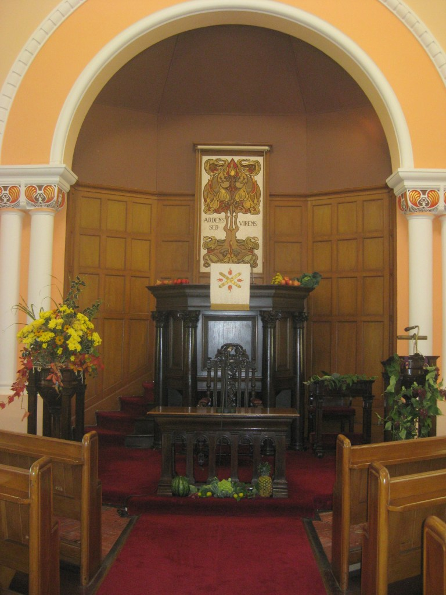

Our minister
Rev. Andrew Gill
Originally from Dublin, Andrew began serving at St Andrew’s in August 2019.
Contact the churchAbout us
A Presbyterian community in the heart of Blackrock, seeking to love God above all and to share Jesus with everyone through word and action.
Welcome
Welcome to Saint Andrew’s Presbyterian Church, Blackrock, County Dublin. As a congregation, we exist to glorify God through worship and service. We do this through a wide variety of activities for people of all ages.
We meet every Sunday at 10am for a traditional service of prayer and praise with contemporary Bible-based preaching. Find out about Junior Church and the crèche.
Among our activities are a prayer circle, Bible study and discussion groups, church trips, a branch of Presbyterian Women, family fun days and coffee mornings for charity. We participate in ecumenical events run in conjunction with other denominations in the community.
Through these activities, we share our love of Christ and build bonds of fellowship. Come and join us. We would love to welcome you to our fellowship.
Our minister
Originally from Dublin, Andrew began serving at St Andrew’s in August 2019.
Contact the church
Our mission
The mission of St. Andrew’s Presbyterian Church, Blackrock is to love God above all and to share Jesus with everyone through word and action.
We are a friendly congregation that seeks to make people of all ages feel loved and accepted.
“Therefore welcome one another as Christ has welcomed you, for the glory of God.”
Romans 15:7
We aim to be like a family where people of all ages know, care for and enjoy each other.
“A new command I give you: Love one another. As I have loved you, so you must love one another.”
John 13:34
We highly value the preaching and teaching of God’s Word.
“For the word of God is alive and active. Sharper than any double-edged sword, it penetrates even to dividing soul and spirit, joints and marrow; it judges the thoughts and attitudes of the heart.”
Hebrews 4:12
We seek to be a church that values personal and corporate prayer.
“And pray in the Spirit on all occasions with all kinds of prayers and requests. With this in mind, be alert and always keep on praying for all the Lord’s people.”
Ephesians 6:18
Our first priority is honouring and glorifying God in all we do.
“Let the message of Christ dwell among you richly as you teach and admonish one another with all wisdom through psalms, hymns, and songs from the Spirit, singing to God with gratitude in your heart.”
Colossians 3:16
We value giving our time and money to support the church’s ministry and help those in need.
“Each of you should give what you have decided in your heart to give, not reluctantly or under compulsion, for God loves a cheerful giver.”
2 Corinthians 9:7
We encourage every member to use their gifts to serve others.
“Each of you should use whatever gift you have received to serve others, as faithful stewards of God’s grace in its various forms.”
1 Peter 4:10
As a church, we care deeply for our world and its people.
“For I was hungry and you gave me something to eat, I was thirsty and you gave me something to drink, I was a stranger and you invited me in, I needed clothes and you clothed me, I was ill and you looked after me.”
Matthew 25:35–36
Sunday 10am · Morning Worship
St Andrew’s is located near Blackrock Village, at the junction of Mount Merrion Avenue and Frascati Park.